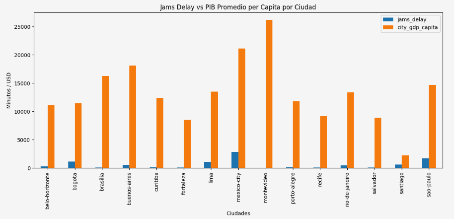

Data Analyst · Portfolio
"Datos. Interpretación. Poder."
Analista de Datos con curiosidad por descubrir las historias ocultas en los números. Con background en tecnología gubernamental, ERP y retail, entiendo los datos porque primero entendí los procesos detrás de ellos.
Me especializo en el ciclo completo: limpiar, transformar y visualizar datos para ayudar a los equipos a tomar mejores decisiones basadas en evidencia.
El Banco Interamericano de Desarrollo (BID) busca identificar en qué ciudades de América Latina invertir en infraestructura de transporte para aumentar la productividad y el bienestar de la población.
Para orientar esa decisión, este análisis busca responder tres preguntas clave:
¿Qué ciudades presentan alta congestión y baja productividad económica?
¿Cuáles muestran los mejores indicadores combinados (movilidad eficiente y economía fuerte)?
¿Qué variables parecen tener una relación más fuerte con el desarrollo urbano?
Qué hice: Crucé datos de tráfico de TomTom Traffic Index (datos de tráfico en tiempo real) con indicadores económicos de la OECD
(PIB per cápita, desempleo y población) usando Python y Pandas. Limpié, uní y analicé ambas bases para obtener información útil
para la toma de decisiones.
Resultado o aprendizaje: Identifiqué la correlación directa entre el retraso por congestión y la caída en el desempeño económico urbano.

Ventas por región · Q4 2024
Análisis de rotación · 2024
| Departamento | Empleados | Rotación | Estado |
|---|---|---|---|
| Tecnología | 48 | 8.3% | Bajo |
| Ventas | 112 | 24.1% | Alto |
| Operaciones | 76 | 14.7% | Medio |
| Marketing | 34 | 10.2% | Bajo |
| Finanzas | 29 | 6.9% | Bajo |
Exploración exhaustiva de datos de recursos humanos con Python y Pandas. Identificación de patrones de rotación, análisis de satisfacción laboral y segmentación de perfiles para apoyar decisiones estratégicas de talento en organizaciones de más de 300 empleados.
Ver proyecto →Pipeline completo de machine learning para predecir deserción de clientes (churn). Desde la limpieza de datos hasta la evaluación final, logrando 91% de precisión con Random Forest, análisis de importancia de variables y reporte ejecutivo automatizado.
Ver proyecto →